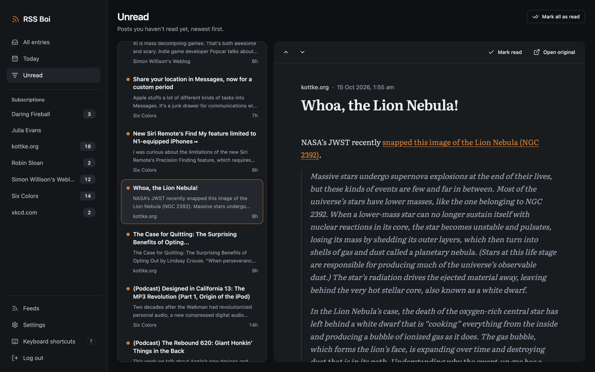
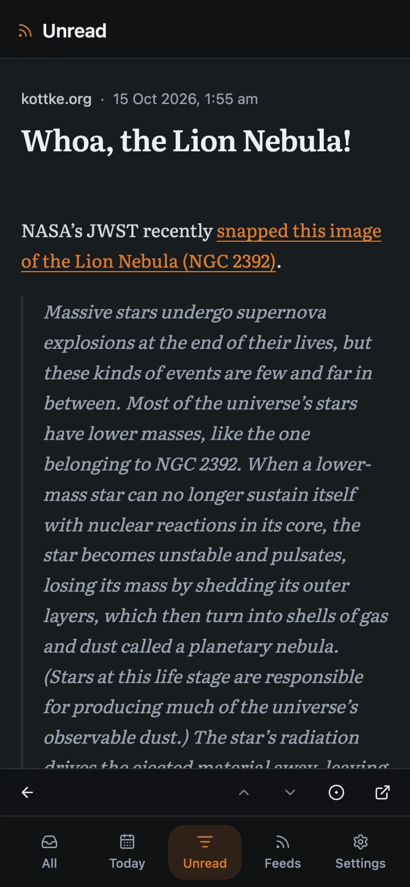
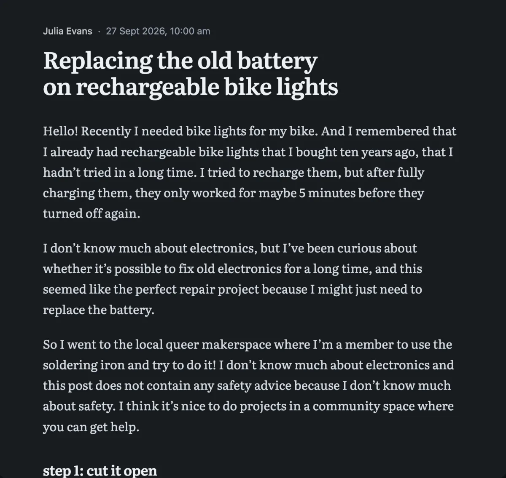
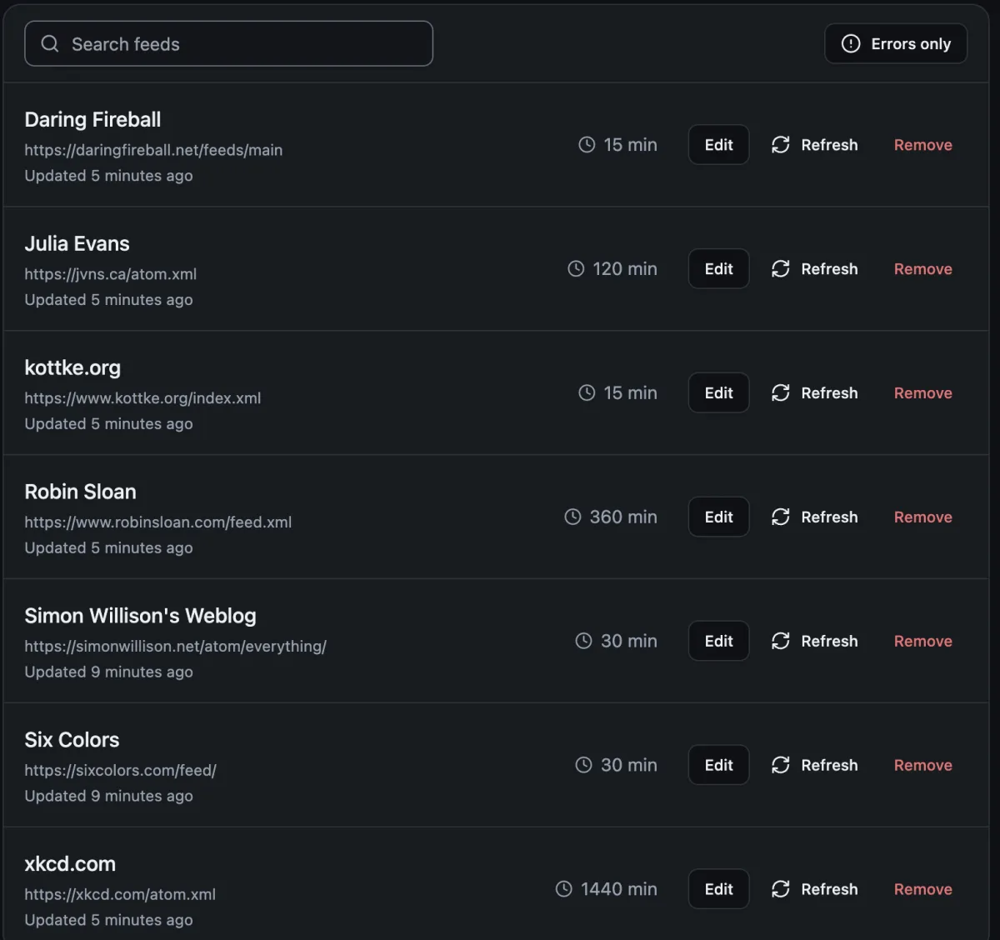

Your feeds.
Your way.
RSS Boi is a calm RSS reader you run on your own server. Follow the sites you choose, check each one on its own schedule, and read without an algorithm deciding what comes next.



Set for long reads
Posts open in a quiet reading view at a comfortable measure, with scripts stripped out and nothing else on the page asking for your attention.
Move through a list without the mouse. Single-key shortcuts can be switched off if they clash with speech input or a screen reader.
- jk next, previous
- m read or unread
- o open original
- ? all shortcuts
Add it to your phone's Home Screen and the app icon carries your unread count.
Every feed on its own schedule
Check a busy site every fifteen minutes and a webcomic once a day. Keep a noisy feed out of All, Today and Unread so it only shows up on its own page.
- Polite to publishers
- Every check sends
ETagandIf-Modified-Since, so an unchanged feed costs almost nothing. A failing feed backs off on its own, up to an hour between tries. - Honest when a feed breaks
- The last response status, content type and body are kept for every feed, so you can see what the server actually sent.
- Yours to keep
- Save a post as a PDF or its images as a ZIP, and move your subscriptions between servers with a JSON export.

Install
RSS Boi runs as three small containers (web app, API and feed worker) next to PostgreSQL. Everyone in the house can have their own account and read state.
-
Download the compose file and settings
curl -fsSLO https://raw.githubusercontent.com/bevanjkay/rss-boi/main/docker-compose.yml curl -fsSL https://raw.githubusercontent.com/bevanjkay/rss-boi/main/.env.example -o .env -
Change the secrets in
.envSet
SESSION_SECRETto a long random string, for example fromopenssl rand -hex 32. Change the database password in bothPOSTGRES_PASSWORDandDATABASE_URL. -
Start it
docker compose up -d -
Open
http://localhost:3000Name your server, create the admin account and add your first feed.
Feeds on your own network
Fetches to private addresses are blocked by default. To read from something like RSSHub on your LAN, allowlist just that host with ALLOW_PRIVATE_HOSTS=192.168.86.199:1200.
Why run your own
A reader on your own server can't be shut down, sold or turned into a recommendation engine. Your subscriptions and read history stay in your own database.
Requirements
Docker with Compose. Prebuilt images are x86-64 (amd64); on ARM, build from source with the development compose file.
All caught up
Nothing left to read. The Boi will keep watch and new posts will land here.